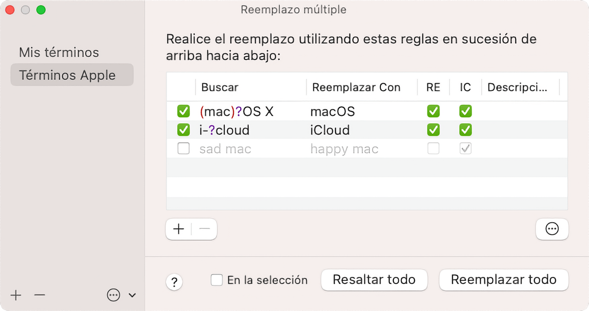

Usando la prestación Reemplazo múltiple, puedes procesar varios reemplazos de texto a la vez en sucesión. Las reglas de reemplazo se pueden almacenar como un ajuste preestablecido con nombre y reutilizar cuando lo necesite.
Puede abrir la ventana Reemplazo múltiple para administrar y procesar los reemplazos múltiples en su documento.

Las definiciones de reemplazo almacenadas que creó antes se enumeran en la lista de la izquierda.
Puedes exportar tus definiciones de reemplazo para transferirlas a otro ordenador. Cada definición de reemplazo se convierte en un solo archivo de Definición de reemplazo de CotEditor, que tiene una extensión de nombre de archivo .cotrpl y cuyo contenido está escrito en formato JSON.
La definición seleccionada en la lista de la izquierda se muestra en el área del editor del lado derecho. Las reglas de reemplazo en el área del editor se realizarán fila por fila de arriba a abajo.
Utilice los botones en la parte inferior del área del editor para realizar múltiples reemplazos.
* Tenga en cuenta que las coincidencias del comando Resaltar pueden ser diferentes de los objetivos de reemplazo cuando realiza Reemplazar todo real, porque, en Reemplazar todo, las filas siguientes se aplican al documento al que ya se han aplicado las filas anteriores.
Puede crear sus propias definiciones de reemplazo para procesar múltiples reemplazos.
No es necesario que realices un guardado después de la modificación porque tus cambios se guardarán automáticamente inmediatamente durante la edición.
Una fila con una regla de reemplazo no válida se omitirá cuando se realice el reemplazo.
| Opción | Descripción |
|---|---|
| (Casilla de verificación) | Si la casilla de verificación está desactivada, la fila no se aplicará y simplemente se omitirá. Puedes usar esta opción para mantener una regla de reemplazo que se utilizará opcionalmente. |
| Buscar | Una cadena para buscar. No puede dejar este campo en blanco. Cuando esté en blanco, la fila se ignorará, ya que no es válida. |
| Reemplazar Con/th> | Una cadena para reemplazar. Si sales de este campo, las coincidencias se acabarán eliminando. |
| RE | Búsqueda con expresión regular (abreviatura de Regular Expresión). |
| IC | Ignorar mayúsculas y minúsculas en la búsqueda (abreviatura de Ignorar Capitalización). |
| Descripción | Puedes usar este campo para dejar un comentario sobre la regla. La descripción no afecta al reemplazo. Este campo se puede dejar en blanco. |
Puedes personalizar el delicado comportamiento de búsqueda del reemplazo desde la vista de opciones avanzadas. Esos ajustes también se guardan en su definición de reemplazo y se aplican a todas las reglas en la misma definición de reemplazo. Haga clic en el botón con el icono (...) en la ventana Reemplazo múltiple y, a continuación, haga clic en las casillas de verificación para cambiar el comportamiento.
Para obtener más información sobre los detalles de cada opción, consulte Buscar o reemplazar texto.